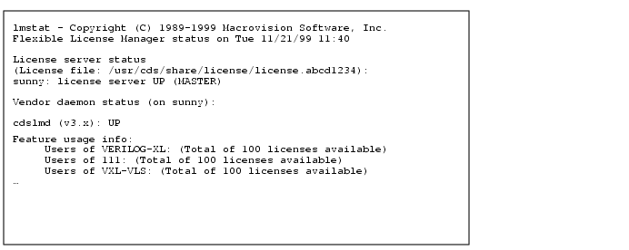

License Maintenance
This chapter contains information about the following topics:
Tracking Licence Expiration
If you do not have permanent licenses for your Cadence software, and if you are not using the automatic update service, then you need to track your license expiration dates. The worst way to find out about expired licenses is when the software returns a fatal error. There are several methods for checking your licenses ahead of time.
Note: Contact your Cadence Sales representative to order new licenses at least 10 days in advance of the expiration date.
Server Model License Expiration Notification
The
lmCheckExpiration.cdsscript checks all licenses in the specified license file. You can schedule the script to run periodically on your system (using cron on UNIX, or the job scheduler on Windows) to notify you when licenses are close to expiring.The script has the following format:
lmCheckExpiration.cds
[-c license_file] [-d days_to_expire] [-m email_address] [features]
The script returns 0 for success, 1 if it cannot connect to any of the license servers, and 2 for an invalid argument.
If a license is going to expire within the specified number of days, the script writes a warning message to the stdout of the terminal from which it was started, and optionally sends mail to a specified user. The message includes the license name, version, expiration date, and the number of days before expiration.
For example, to check the status of licenses for
cpeand feature34500:
Show a message only if the licenses are expiring today:
Show and send a message if the licenses are expiring within 30 days:
Client Model License Expiration Notification
Beginning in the summer of 2002, some new Cadence applications can notify you when their licenses are nearing their expiration dates. If a tool has this capability, it will be mentioned in the product's Product Notes or What's New documentation.
To use this new feature, set the
CDS_LIC_EXPIREenvironment variable and specify a number of days. Each time you start your Cadence tool, it will notify you if any of the licenses it checks out are expiring within that specified number of days.Use the following formats to set the variable:
If a license is going to expire within the specified number of days, the tool writes a warning message to the stdout of the terminal from which it was started. The message includes the license name, version, expiration date, and the number of days before expiration.
Show a message only if the license is expiring today:
Show a message if the license is expiring within 30 days:
Monitoring Licensing
Licensing requires little or no maintenance or monitoring, but you may need to
Know the status of your licenses or license daemons
Look at the log files
Determine the license usage
Control or restrict the access to licenses in some way
This reference assumes that the
cdsmgraccount you created during installation is the account you use to monitor and maintain Cadence licensing.Because Macrovision provides the
LM_LICENSE_FILEvariable to specify the path to the license file, setLM_LICENSE_FILEbefore you run the licensing utilities so that you do not have to type the path to the license file for each utility.For example, to determine the status of the license daemons, you usually specify the license file name and type
lmstat -a -c /usr/cds/share/license/license.abcd1234 If you will be using many licensing utilities during a session, set this variable in the shell where you will run the utilities.
setenv LM_LICENSE_FILE /usr/cds/share/license/license.abcd1234 then to retrieve the status, you only need to type
lmstat -a
License and Daemon Status
Use lmstat to display the status of the license servers, Cadence daemons, features, and users of each feature.
For example, if a license server named
sunnyuses the/usr/cds/share/license/license.abcd1234license file, typelmstat -a -c /usr/cds/share/license/license.abcd1234
lmstatresponds with something similar to thisYou can also use the
port@hostformat to display the status of the license servers, Cadence daemons, features, and users of each feature. If5280is the port number you are using and the license server is running onsunny, typelmstat -c 5280@sunny
License Usage
The debug log file and the report log file collect different usage information.
Debug Log File
The license daemons record all license activity (licenses checked in and out, licenses denied, queues, and network problems) in a
/usr/tmp/license.logdebug log file (default).Preferences
You can specify several debug log file preferences:
Create a log file you can rename while the daemons are running (the default method of starting the daemons)
When you configure licensing, the utility creates an
rc.licfile (from therclic.samplefile) that starts the licensing daemons with this line:
When the daemons start with this method, you can rename the output log file without stopping the daemons. A new debug log file replaces it.
Create a log file that the computer does not delete as it reboots
The default method of starting the daemons creates the log file in
/usr/tmp(/usr/tmp/license.log) instead of/tmpbecause the computer deletes the files in/tmpwhen the it reboots. You can modify the/etc/rc.licfile to place the debug log file in another location.If the license-server boot script starts the license daemons the default way,
/etc/rc.licrenames thelicense.logfile with a.month.day.timeextension, such aslicense.log.Nov.24.09:20:23, and creates a newlicense.logfile.Limit the messages recorded in the log file by editing the
optionsfile.
Because the licensing daemons and other processes share the same log file, the log file can grow very large, especially when stable licensing daemons serve many licenses. You can periodically remove old
license.logfiles to save disk space. Do not remove an old log file until you have generated any desired licensing reports from it. Portions of a debug log file follow:15:33:50 (lmgrd) ----------------------------------------------- 15:33:50 (lmgrd) Please Note: 15:33:50 (lmgrd) 15:33:50 (lmgrd) This log is intended for debug purposes only. 15:33:50 (lmgrd) There are many details in licensing policies 15:33:50 (lmgrd) that are not reported in the information logged 15:33:50 (lmgrd) here, so if you use this log file for any kind 15:33:50 (lmgrd) of usage reporting you will generally produce 15:33:50 (lmgrd) incorrect results. 15:33:50 (lmgrd) 15:33:50 (lmgrd) ----------------------------------------------- 15:33:50 (lmgrd) 15:33:50 (lmgrd) 15:33:50 (lmgrd) FLEXlm (v6.1f) started on cds10065 (Sun) (8/26/1999) 15:33:50 (lmgrd) FLEXlm Copyright 1988-1999, Macrovision Software, Inc. 15:33:50 (lmgrd) US Patents 5,390,297 and 5,671,412. 15:33:50 (lmgrd) World Wide Web: http://www.macrovision.com 15:33:50 (lmgrd) License file(s): license.dat 15:33:50 (lmgrd) lmgrd tcp-port 5280 15:33:50 (lmgrd) Starting vendor daemons ... 15:33:50 (lmgrd) Started cdslmd (internet tcp_port 39412 pid 1520) 15:33:50 (cdslmd) FLEXlm version 6.1f CADENCE_ERROR_MSG: FEATURE "F6" with code "FC62A8E17705E28A6C3A" is unsupported. Ignored. 15:33:50 (cdslmd) Using options file: "options" 15:33:50 (cdslmd) Feature F5 is not enabled yet 15:33:50 (cdslmd) Feature F5 is not enabled yet 15:33:50 (cdslmd) Feature F5 is not enabled yet 15:33:50 (cdslmd) EXPIRED: F7 15:33:50 (cdslmd) EXPIRED: F8 15:33:50 (cdslmd) Warning: F1 expires 1-sep-1999 15:33:50 (cdslmd) Server started on cds10065 for: F1 15:33:50 (cdslmd) F1 F1 F2 15:33:50 (cdslmd) F2 F2 F3 15:33:50 (cdslmd) F4 F5 F8 15:33:50 (cdslmd) FEATURE F1 INACTIVITY TIMEOUT set to 900 seconds 15:33:50 (cdslmd) FEATURE F1 INACTIVITY TIMEOUT set to 900 seconds 15:33:50 (cdslmd) FEATURE F1 INACTIVITY TIMEOUT set to 900 seconds 15:33:50 (cdslmd) FEATURE F2 INACTIVITY TIMEOUT set to 900 seconds 15:33:50 (cdslmd) FEATURE F2 INACTIVITY TIMEOUT set to 900 seconds 15:33:50 (cdslmd) FEATURE F2 INACTIVITY TIMEOUT set to 900 seconds 18:18:26 (cdslmd) OUT: "F1" jdoe@sunny 18:19:57 (cdslmd) OUT: "F2" joan@windy 18:21:42 (cdslmd) IN: "F1" jdoe@sunny 18:22:28 (cdslmd) IN: "F2" joan@windy 18:41:48 (lmgrd) SHUTDOWN request from cdsmgr at node cloudy 18:41:48 (lmgrd) lmgrd will now shut down all the vendor daemons 18:41:48 (lmgrd) Shutting down cdslmd 18:41:48 (cdslmd) daemon shutdown requested - shutting down The debug log file does not always give you the type of report you want for several reasons:
Because the debug log file does not record information about uncounted licenses, you cannot generate reports about site license usage.
If you prevent certain messages from being recorded with the
NOLOGoption, you cannot include that information in reports.The information you really want goes to the report log file.
For an enhanced report generator, contact a third-party vendor or Macrovision.
Report Log File
You can generate additional usage information from the non-ASCII report log file by using third-party report generators.
Stopping and Starting the License Daemons
You need to stop and restart the license daemons
After you modify
The path to the license file
The host name or port number in the license file
The
optionsfileTo start a new debug log file
You must stop the license daemons carefully to prevent loss of users' data.
Stopping the License Daemons
If you are not the owner of the daemon, you will need to be
rootor be listed inlmadmingroup or group0in/etc/grouporNISor its equivalent to stop the daemons.
Do not kill the license manager daemon while licenses are in use because the users could lose their data. Do not use the -9option of thekillcommand.Follow these steps to stop the daemons.
Notify users that you are terminating the license daemons so that they can exit the products properly.
WARNING (LM 100) waiting <num_sec> seconds to regain <feature> license
Terminate the licensing daemons.
The
lmdownutility shuts down ALL license daemons in the specified license file. If you do not specify a license file and you have multiple license files in your path,lmdownshuts down ALL license daemons in all license files. The license daemons write their last messages to the debug log file, close the file, and exit. All licenses granted by those daemons return to the license pool. If an application is still running when you terminate the license daemons, the next time the client program tries to verify its license, the license will not be valid.Only use your operating system's
killcommand iflmdowndoes not work. If you startedlmgrdwith lmgrd-2 -p -x lmdown, you cannot uselmdownto shut the daemons down.Go to Starting the License Daemons
Starting the License Daemons
If you have multiple license servers, restart the license daemons on each license server that you have shut down.
To restart the license daemons, follow these steps.
Verify that the daemons are not running.
If the license daemons are running, stop the daemons.
Do not kill the license manager daemon while licenses are in use because the users could lose their data. Do not use the -9option of thekillcommand.
For fault-tolerant license servers, start the license daemons on each license server within three minutes of starting the first daemon.
If the
/etc/rc.licscript starts the license daemons, type
/etc/rc.lic If you did not create the script to start the license daemons, type
This command starts the license daemons using
license_file, records the licensing activity in/usr/tmp/license.log, and runs in the background.Check the log file for error messages.
If you see the following message in the license log file,
/usr/tmp/license.log, another license daemon is probably running.
ERROR: datetime(cdslmd) Retrying socket bind (address in use)
Changing the License File
If you modify a license file while the license daemons are running, such as when you receive a new license file, you can use
lmrereadto force the daemons to read the new license files. The license daemons do not see the changes until they restart or reread the license file.Follow these steps to force the daemons to see the new license file.
Decide if you must shut down the license daemons.
If the license daemons need to reread the license file and the license daemons are still running, force the license daemons to read the new license file.
For fault-tolerant license servers, use
lmrereadon one license server.To specify which daemon should read the new license file, type
The
-coption specifies the license file. If you do not specify a license file,lmrereadlooks for the license file sequentially inIf the new license file contains changes to licenses currently in use, users must exit and restart the applications to use the new features.
If the users located the old license file with the
CDS_LIC_FILEorLM_LICENSE_FILEenvironment variable and the location of the license file has changed, they must change the path specified by the variable.
For support, see http://www.cadence.com/support
or try Cadence's SourceLink service.
Copyright © 2004, Cadence Design Systems, Inc.
All rights reserved.
Legal notices and trademark attributions